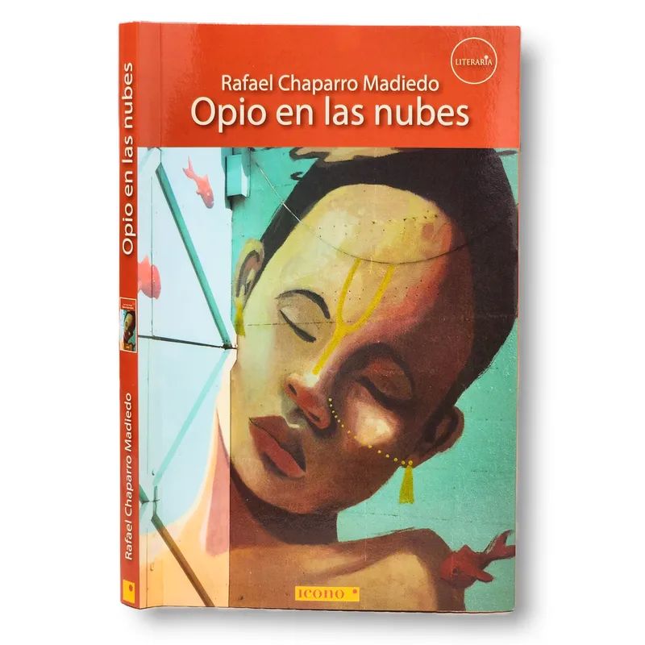

01 / 01
Opio en las nubes
- Autoría
- Rafael Chaparro Madiedo
- Fecha
- 1992
- Tipo
- Novela
- Lugar
- Chapinero Central
- Temas
- Vida nocturna
- Mirada
- La rebelde
- Impacto
- Volvería a ella
- Reacción
- Vuela la cabeza
«Allá abajo la ciudad está que bulle».
— Rafael Chaparro Madiedo, Opio en las nubes
Cuando cae la noche, Bogotá no se detiene: cambia de ritmo. Las luces comienzan a dibujar otros paisajes sobre sus calles, los bares abren sus puertas, la música se escapa por las ventanas y las conversaciones se prolongan hasta encontrar la madrugada. Hay una ciudad que aparece cuando termina el día, una que se construye entre encuentros, recorridos, canciones y personas que encuentran en la noche otra manera de vivir.
Pero la noche bogotana no tiene una sola cara. Puede ser estruendosa y festiva, pero también solitaria; puede estar llena de movimiento y, al mismo tiempo, de personas que buscan perderse entre la multitud. En sus calles conviven la euforia, el deseo, los excesos, la incertidumbre y esa extraña melancolía que a veces acompaña las horas más largas.
Esta colección reúne obras que nos acercan a esas otras formas de experimentar Bogotá. A través de la literatura, la música y las distintas expresiones culturales, nos invita a recorrer los espacios nocturnos, reconocer sus personajes y descubrir las historias que nacen cuando la ciudad parece abandonar sus rutinas. Son miradas que nos permiten acercarnos a una Bogotá menos predecible, donde lo cotidiano puede volverse extraño y cualquier encuentro puede convertirse en una historia.
Quizás sea durante la noche cuando la ciudad muestra algunas de sus contradicciones más profundas. Mientras unos celebran, otros trabajan; mientras algunos buscan compañía, otros encuentran en la soledad un refugio. La noche reúne mundos que durante el día parecen separados y nos recuerda que Bogotá también está hecha de esas vidas que transcurren lejos de la luz.
Te invito a recorrer esta ciudad que bulle, que canta, que se pierde y vuelve a encontrarse. A mirar más allá de sus luces y descubrir qué sucede cuando el ruido, la música y las sombras se convierten en parte de nuestra manera de habitarla.
¿Qué Bogotá aparece cuando cae la noche?
Recorrer las obras ↓COLECCIÓN 03 / 07
La ciudad que despierta cuando cae la noche.

01 / 01
¿Cómo sería Bogotá si la ciudad pudiera salir de noche, fumar un cigarrillo y escuchar rock?
En Opio en las nubes, Rafael Chaparro Madiedo convierte Bogotá en una protagonista que respira, se mueve y parece vivir al ritmo de la música. Sus calles, bares y espacios nocturnos se transforman en escenarios de una ciudad psicodélica, irreverente y desencantada, habitada por personajes que transitan entre el deseo, la soledad, los excesos y la búsqueda de otras formas de existir.
A través de una narración fragmentaria, provocadora y llena de imágenes inesperadas, la novela construye una experiencia urbana que se aleja de las representaciones convencionales de Bogotá. La ciudad aparece entre canciones de rock, conversaciones, humo, recorridos y encuentros fugaces. No es simplemente el lugar donde sucede la historia: es una presencia que acompaña, transforma y, en ocasiones, parece confundirse con sus propios habitantes.
Chapinero y sus alrededores forman parte de ese universo nocturno en el que la realidad se mezcla con la imaginación y lo cotidiano adquiere dimensiones alucinadas. La novela retrata una generación inconforme, personajes que parecen buscar algo que no terminan de encontrar y una ciudad en la que la libertad convive con el desencanto.
Leer Opio en las nubes es dejarse llevar por otra manera de recorrer Bogotá: una ciudad que no siempre se comprende, pero que se siente, se escucha y se recuerda. Una invitación a descubrir lo que ocurre cuando cae la noche y la vida parece desbordarse.
Bogotá tiene muchas maneras de vivirse cuando cae la noche. Hay lugares que se convierten en refugios, calles que guardan recuerdos, canciones que acompañan recorridos y encuentros que permanecen en la memoria.
Queremos conocer esa Bogotá que cada persona experimenta después del atardecer. Te invitamos a compartir una historia, un recuerdo o una experiencia que represente tu manera de habitar la noche en la ciudad.
Puedes contarnos qué lugar relacionas con la vida nocturna, dónde se encuentra y qué representa para ti. También puedes compartir una fotografía de manera opcional.
Compartir mi historia ↗En el video oficial de Sólo Hay Una Forma De Saberlo (On n On), LosPetitFellas nos llevan a una noche que comienza entre amigos, en un bar y alrededor de una mesa de billar. Un encuentro inesperado altera el rumbo de la velada y hace que cada personaje termine viviendo sus propias aventuras.
Entre recorridos, desencuentros y situaciones imprevisibles, el video construye una noche urbana que se desborda y se fragmenta en distintas experiencias. Una mirada a esa Bogotá nocturna en la que nunca se sabe del todo cómo puede terminar la noche.

Sólo Hay Una Forma De Saberlo (On n On) · LosPetitFellas · Video oficial.
Ver video en YouTube ↗La noche bogotana también se cuenta a través de su música y de las voces de quienes la viven. Bogotá Nocturna es una emisora virtual que busca apoyar y visibilizar el talento musical, además de compartir historias y experiencias relacionadas con la vida nocturna de la ciudad.
Te invitamos a escucharla y descubrir otras expresiones de esa Bogotá que permanece despierta: una ciudad que suena, se encuentra y sigue creando cuando cae la noche.
Escuchar Bogotá Nocturna ↗